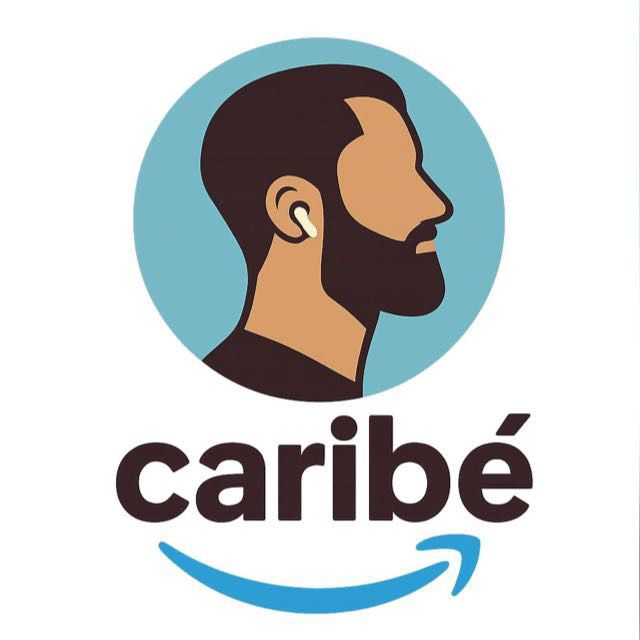
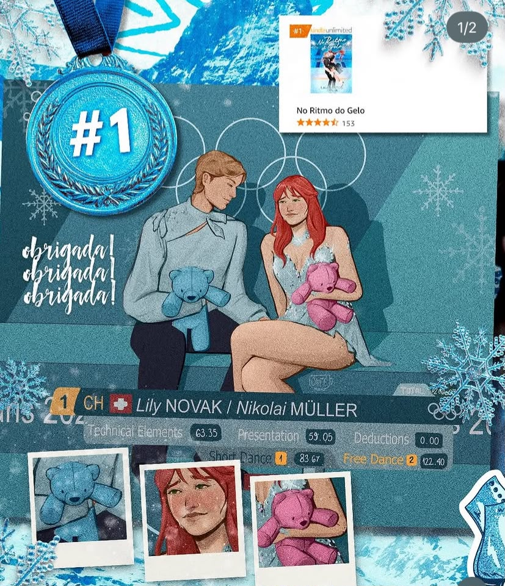
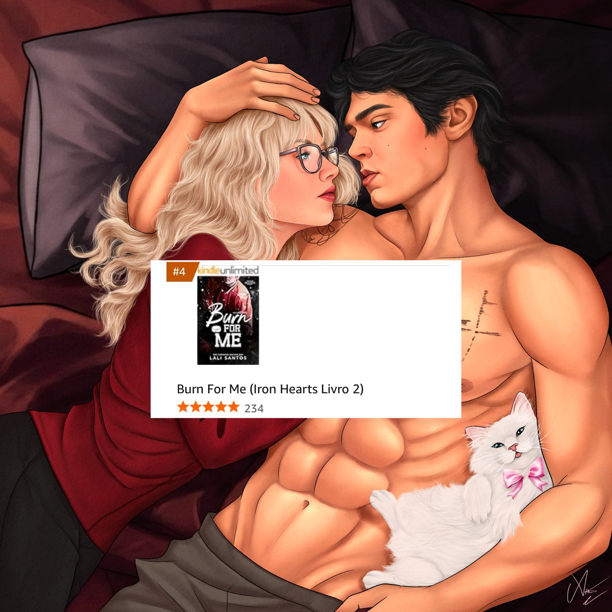
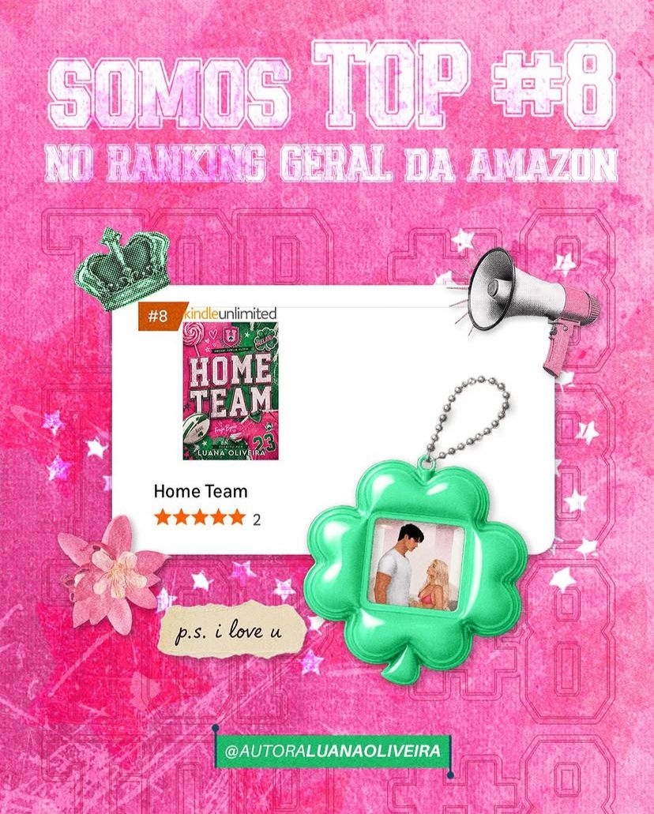
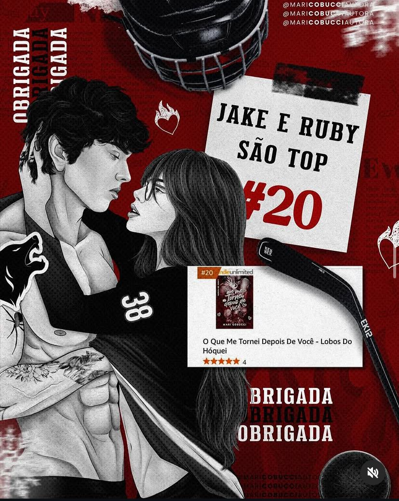

0
Leitoras alcançadas pelos anúncios · pessoas únicas · 18 meses

FalarDois livros no Top 1 do Kindle Unlimited
Atuo só no mercado literário, do pré-lançamento ao livro já publicado: construo, leitora por leitora, o público que faz um lançamento acontecer e multiplica as leituras de quem já lançou.
Capítulo 01 · Os números
O que os anúncios fizeram pelos livros que gerencio, tudo somado. Não é o print de um dia de sorte: é o total de janeiro de 2025 a julho de 2026.
Leitoras alcançadas pelos anúncios · pessoas únicas · 18 meses
Cliques de leitoras indo até o livro · 18 meses · jan/2025–jul/2026
Taxa de cliques sobre o total de leitoras alcançadas · ~575 mil cliques ÷ 1,73 milhão de leitoras
Custo médio de cada clique · Meta Ads · mínimos de R$ 0,04–0,05 em campanhas de venda
Números reais das campanhas geridas pela Caribé entre janeiro de 2025 e julho de 2026. E não é museu: há campanhas de lançamento no ar agora mesmo, levando leitoras ao livro por cerca de R$ 0,05 o clique.
Capítulo 02 · O espelho
Quem lê, comenta. Quem termina, pede a continuação. O problema não está na história, e no fundo você sabe disso.
Você já tentou o caminho que todo mundo indica: impulsionar o post. Escolheu um valor, apertou o botão, esperou. Vieram curtidas de perfis que você nunca viu. Venda, nenhuma que desse pra rastrear. O ranking ficou onde estava, e o dinheiro não voltou.
Enquanto isso, autoras que você conhece do meio batem Top do Kindle Unlimited com livros que não são melhores que o seu. Você confere o ranking todo dia. O delas sobe. O seu, não.
Não foi o livro. Não foi o tráfego. Foi lançar para estranhos.
Post impulsionado compra atenção de um público frio por alguns dias e desliga. O algoritmo não tem tempo de aprender quem é a sua leitora. Ninguém aquece. No dia do lançamento, o livro chega a um perfil pequeno e frio. Assim, até livro bom perde.
A diferença entre você e elas não é o livro. É o que acontece antes do lançamento. E é isso que o próximo capítulo mostra.
Capítulo 03 · O método
O pódio é o que aparece. O que ninguém vê é a audiência aquecida esperando o link do livro. É isso que eu construo, em três fases:
pré-lançamento
Começamos cedo e com valor mínimo: aquecer a audiência, testar criativos, atrair as primeiras leitoras. Quanto antes, melhor. Tempo é o maior aliado de um lançamento.
o livro no ar
Com o link do livro publicado, o mesmo público que engajou antes é quem corre para a Amazon. O orçamento sobe em curva gradual, sem saltos bruscos que atrapalhem o aprendizado do algoritmo.
depois do lançamento
O público não evapora quando o lançamento termina: ele segue você. Tráfego e orgânico trabalham juntos para transformar leitoras curiosas em fãs que esperam o próximo livro.
Consistência de investimento
O investimento é planejado junto com você: definimos a sua meta, partimos de um valor inicial mais baixo e subimos em curva gradual até chegar nela. É assim que o algoritmo aprende com qualidade e encontra as leitoras certas, não qualquer pessoa.
Anúncio para leitora de romance é um ofício próprio. O criativo que para o dedo dela, a segmentação que encontra quem realmente lê, a linguagem do meio. Nada disso se improvisa vindo de fora do mercado literário. É essa especialização que explica os números do capítulo anterior: taxas de clique recorrentes de 10–11% onde o mercado geral fica entre 1–2%, e cliques na casa dos centavos.
Capítulo 04 · O método na vida real
Começamos do zero, com a audiência fria e valor mínimo. No primeiro mês de anúncios, o perfil cresceu +863% em seguidoras, com leitoras chegando antes mesmo de existir um link para comprar.
A consistência fez o trabalho silencioso: orçamento subindo em curva, algoritmo aprendendo quem era a leitora certa, alcance amadurecendo mês a mês. É a fase sem glamour. E é ela que decide o dia do lançamento.
Com o link publicado, o público construído respondeu, pago e orgânico somados.
Esse mesmo caminho é o que você vai ver no próximo capítulo, em prints.
Capítulo 05 · O pódio
Cinco livros que fizeram esse caminho, no lugar mais disputado da Amazon, dois direto ao 1º lugar do Kindle Unlimited. Os prints são reais. Toque para ampliar.

Top 1 No Ritmo do Gelo Top 1 Stay For Me
Top 4 Burn For Me
Top 8 Home Team
Top 20 O Que Me Tornei Depois De VocêPosição de ranking, ninguém pode prometer. E quem promete, desconfie. O que eu mostro é o caminho que já levou cinco livros até aqui. Se você quiser, o próximo capítulo pode começar com o seu.
Conversar sobre o meu livroCapítulo 06 · As autoras
Qualquer um mostra um print bom. O que não dá para forjar é uma autora que renova a confiança mês após mês: a mesma parceria segue de pé há 18 meses de operação contínua, lançamento após lançamento. É esse tipo de relação que eu construo, com poucas autoras de cada vez.
Autoras atendidas
Gestão contínua de tráfego para múltiplos títulos, entre eles Stay For Me e No Ritmo do Gelo, os dois em 1º lugar do Kindle Unlimited.
Estratégia de lançamento para dois livros, entre eles O Que Me Tornei Depois De Você, que chegou ao Top 20 do Kindle Unlimited, com criativos de influenciadoras e reels de citações.
Tráfego e estratégia para o lançamento de Home Team, romance esportivo que chegou ao Top 8 do ranking geral da Amazon.
Capítulo 07 · O serviço
Gestão de anúncios no Meta Ads, Facebook e Instagram, do primeiro ajuste técnico ao relatório que você entende sem dicionário.
Arrumo a casa antes do primeiro anúncio:
Entendo o seu livro e quem precisa encontrá-lo:
A máquina montada por inteiro:
Nenhuma campanha fica sozinha:
Importante: a criação dos criativos (imagens, vídeos e textos dos anúncios) fica com a autora. Mas você não cria no escuro: eu oriento com os formatos que comprovadamente funcionam no meio literário.
Valores e condições chegam na conversa: você me conta do seu livro, eu respondo com a proposta estratégica e o mídia kit.
Capítulo 08 · Perguntas de autora
Quanto antes. O pré-lançamento aceita começar com valor mínimo, o suficiente para aquecer a audiência, testar criativos e atrair as primeiras leitoras. Começar cedo dá espaço para crescer com calma e corrigir rota antes do dia que importa. Tempo é o ingrediente que dinheiro nenhum compra depois.
Dá, com a estratégia certa e uma condição: consistência. Nada de multiplicar o orçamento de um dia para o outro; saltos bruscos confundem o aprendizado do algoritmo e desperdiçam verba. Encurtamos o caminho, não a lógica dele.
Dá. O público é exatamente o que a gente constrói no pré-lançamento. O lançamento de 2025 que está no Capítulo 04 partiu de audiência fria e cresceu +863% em seguidoras no primeiro mês. E mesmo sem o link do livro ainda, dá para começar levando leitoras ao seu perfil, com visitas que já saíram a partir de R$ 0,03.
Precisa, e isso é boa notícia. Tráfego pago e orgânico trabalham juntos: o anúncio leva a leitora até você; o seu perfil é o que a convence a ficar. Anúncio sozinho não cria desejo do nada, e perfil parado desperdiça o clique que custou dinheiro.
Depende da sua meta, e ela é definida junto comigo, não imposta. A lógica é sempre a mesma: começar com um valor mais baixo e subir em curva gradual, com previsibilidade, sem sustos. O valor do serviço e as condições vêm na proposta que eu te envio no WhatsApp, junto com o mídia kit.
Capítulo final · O convite
Não é pose: um livro bem trabalhado ocupa espaço na agenda, e eu prefiro poucos livros bem cuidados a muitos livros na fila. Me conte da sua história. Eu leio, olho o seu perfil e o seu livro, e te respondo no WhatsApp com a proposta estratégica e o mídia kit.